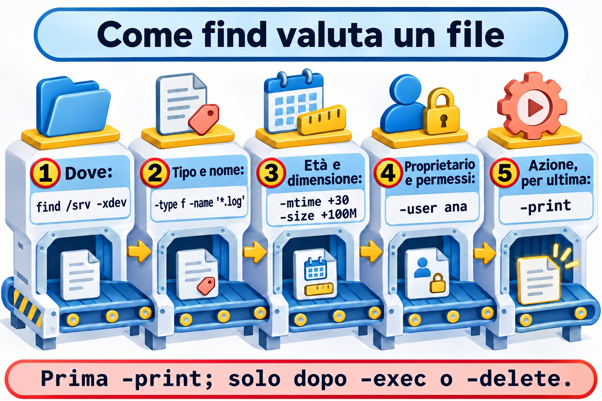
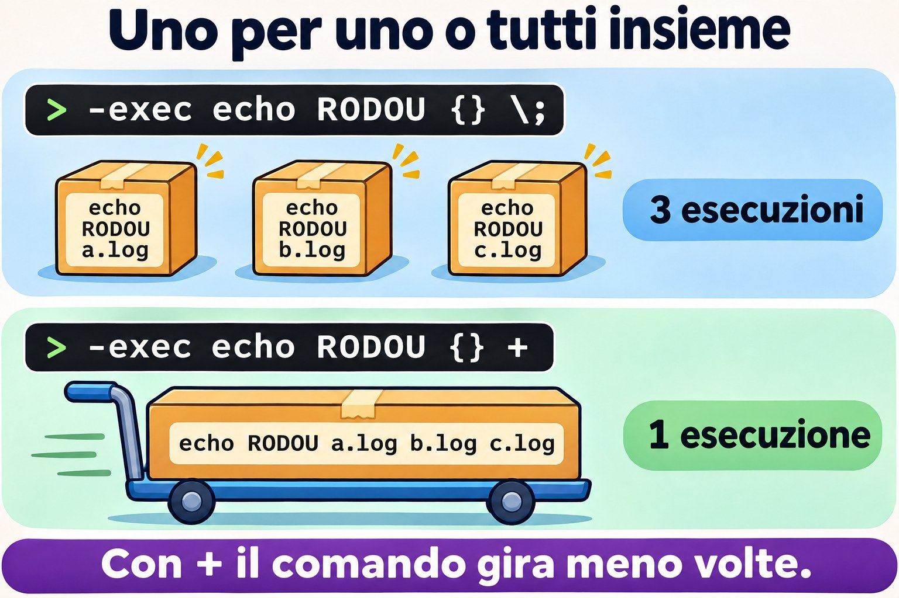
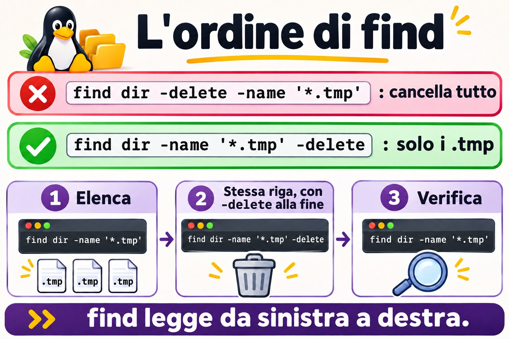

Lezione 8.2 · find a fondo
locate risponde in fretta, ma conosce solo i nomi. Quando la domanda è "cosa ha superato 1 GB, non è stato toccato da 90 giorni e appartiene a un utente che se n'è andato", lo strumento è find. È anche il comando più pericoloso di questa fase, perché agisce in blocco. Qui impari a costruire la ricerca e a verificarne il risultato prima di agire.
Il cuore di questa lezione: combinare nome, tipo, proprietario, dimensione, data e permessi; leggere
-mtimee-sizesenza cadere negli arrotondamenti; usare le parentesi e-prune; agire con-execexargs; e guardare sempre la lista prima di-delete. Il resto è approfondimento.
| Scheda | |
|---|---|
| Modulo | M8 · File a fondo, lezione 2 di 5 |
| Quando | Settimana 12 |
| Alla fine | Trovi file con qualsiasi criterio e agisci su di essi in sicurezza |
| Prerequisiti | Lezioni 1.6, 2.7 e 8.1 |
| Durata | circa 2h |
| Snapshot | m8a2-inicio e m8a2-fim su rocky-lab e debian-lab |
1 · Riscaldamento
Rispondi prima di leggere.
- Che cosa significa
-mtime +30? Il file di esattamente 30 giorni rientra? - Cosa c'è di sbagliato in
find . -name *.log? - Qual è la differenza tra
-exec comando {} \;e-exec comando {} +?
2 · Perché conta
| La richiesta | La risposta sbagliata | Cosa provoca |
|---|---|---|
| "Pulisci i log più vecchi di 30 giorni" | find ... -delete senza guardare prima | Cancella anche ciò che non era un log |
| "Il server si è bloccato quando ho lanciato la ricerca" | Ripetere la ricerca | find / è entrato nell'NFS. Mancava -xdev |
| "Chi ha lasciato l'azienda ha lasciato dei file" | Cercare cartella per cartella | find -nouser risolve in una riga |
| "Dobbiamo fare l'audit dei SUID" | Elencare solo /usr/bin | Un SUID strano in un'altra cartella passa inosservato |
| "Ho copiato la riga da Google e ha cancellato tutto" | Ripristinare senza capire | L'ordine delle opzioni conta in find |
3 · Modello mentale
findè un ispettore che percorre tutti i corridoi. Su ogni file legge una lista di domande, da sinistra a destra. Se una risponde "no", salta al file successivo. Anche un'azione, come-delete, è un elemento della lista: l'ispettore la esegue nel momento in cui ci arriva. Per questo l'ordine è tutto.
find ONDE PERGUNTAS AÇÃO
find /var -xdev -type f -name '*.gz' -mtime +90 -print
│ │ │ │ │ │
│ │ │ │ │ └─ só agora age
│ │ │ │ └─ mais de 90 dias?
│ │ │ └─ o nome casa?
│ │ └─ é arquivo comum?
│ └─ fica neste disco
└─ de onde começa
E implícito entre as perguntas · -o é OU · \( \) agrupa · ! nega

Ponte Windows
| In Windows | In Linux | Dove il paragone inganna |
|---|---|---|
dir /s /b *.log | find . -name '*.log' | find testa molto più del nome |
Get-ChildItem -Recurse -Filter | find | In PowerShell filtri oggetti. In find, l'espressione sta nelle opzioni |
forfiles /d -30 /c "cmd /c del @file" | find -mtime +30 -delete | forfiles conta i giorni in un altro modo. Elenca sempre prima |
robocopy /L per simulare | find con -print prima dell'azione | find non ha una modalità simulata: a simulare sei tu |
4 · L'essenziale
Domande
| Per... | Esempio | Nota |
|---|---|---|
| Nome | -name '*.log', -iname | Sempre tra virgolette |
| Percorso | -path '*/cache/*' | Guarda il percorso intero |
| Tipo | -type f, -type d, -type l | File, cartella, link |
| Proprietario | -user student, -group adm | |
| Senza proprietario | -nouser, -nogroup | UID senza utente |
| Dimensione | -size +100M, -size -10k | Suffissi c, k, M, G |
| Vuoto | -empty | File o cartella |
| Modifica | -mtime +30, -mmin -60 | Giorni e minuti |
| Accesso, stato | -atime, -ctime | -ctime è il cambio dei metadati |
| Dopo una data | -newermt '2026-11-01' | |
| Più recente di | -newer ARQUIVO | |
| Permessi esatti | -perm 644 | Uguale a 644 |
| Tutti questi bit | -perm -g+w | Deve averli tutti |
| Uno qualsiasi di questi | -perm /6000 | SUID o SGID |
| Limite di discesa | -maxdepth 2 | Va prima delle domande |
| Non uscire dal disco | -xdev | Essenziale in find / |
Gli arrotondamenti
| Espressione | Cosa significa |
|---|---|
-mtime 0 | Modificato nelle ultime 24 ore |
-mtime +30 | Età, in giorni interi, maggiore di 30: ha almeno 31 giorni |
-mtime -7 | Meno di 7 giorni |
-size +1M | Più di 1 MiB |
-size -1M | Solo file vuoti, perché 500 KB si arrotonda per eccesso a 1M |
Per limiti piccoli, usa un'unità più piccola, come -size -1024k.
Azioni
| Voglio... | Forma |
|---|---|
| Vedere la lista | -print (predefinito) o -ls |
| Formattare | -printf '%s %p\n' |
| Eseguire uno per file | -exec comando {} \; |
| Eseguire in blocco, più veloce | -exec comando {} + |
| Chiedere prima | -ok comando {} \; |
| Cancellare | -delete, sempre per ultimo |
| Passare a un altro comando | -print0 | xargs -0 -r comando |


\; il comando gira una volta per file; con + gira una volta sola per tutti.Escludere una cartella dalla discesa
find . -path ./app/tmp -prune -o -name '*.log' -printLeggila così: se è quella cartella, non entrare; altrimenti, testa il nome. Il -print finale è obbligatorio.
Rocky × Debian
find è lo stesso su entrambe. Cambiano le cartelle e i SUID trovati. In ogni famiglia, i log ruotati possono avere nomi diversi, quindi guarda prima di filtrare.
5 · Lab guidato
Passo 0 · Snapshot e albero. Su Proxmox: qm snapshot 201 m8a2-inicio e qm snapshot 202 m8a2-inicio. Su rocky-lab:
mkdir -p ~/lab82/{app/logs,app/tmp,dados,"nome com espaco"}
cd ~/lab82
touch app/logs/hoje.log app/tmp/a.tmp app/tmp/b.bak dados/planilha.csv
touch "nome com espaco/relatorio final.txt"
touch -d '40 days ago' app/logs/antigo.log
touch -d '3 days ago' app/logs/recente.log
truncate -s 5M dados/grande.bin
truncate -s 500K dados/medio.bin
chmod 666 dados/planilha.csv
sudo touch dados/do-root.txt
find . -type f | wc -lSono 10 file.
Passo 1 · Tipo, nome e proprietario.
find . -type d
find . -type f -name '*.log'
find . -iname '*.CSV'
find . -type f -user root
find . -maxdepth 1Passo 2 · Date.
find . -type f -mtime +30
find . -type f -mtime -7
find . -type f -mtime 3
find . -type f -newermt "$(date -d yesterday +%F)"Passo 3 · Dimensione, e l'arrotondamento.
ls -lh dados
find . -type f -size +1M
find . -type f -size -1M
find . -type f -size -1024k -size +0medio.bin, da 500 KB, non compare in -size -1M, perché viene arrotondato a 1M. Con -1024k, compare.
Passo 4 · Permessi.
find . -type f -perm 666
find . -type f -perm -o+w
sudo find / -xdev -type f -perm /6000 -lsL'ultimo è l'audit di SUID e SGID della macchina. Salva quell'output in un file sui server di cui ti occupi: il confronto nel tempo rivela cosa è nuovo.
Passo 5 · Combinare.
find . -type f \( -name '*.tmp' -o -name '*.bak' \)
find . -type f ! -name '*.log'
find . -path ./app/tmp -prune -o -type f -name '*.*' -printPasso 6 · Agire: \; e +.
find . -name '*.log' -exec echo RODOU {} \;
find . -name '*.log' -exec echo RODOU {} +
find . -type f -name '*.txt' -print0 | xargs -0 -r ls -lCon \;, echo gira una volta per file. Con +, una volta sola, con tutti. xargs -0 protegge il nome con lo spazio, come hai visto nella lezione 1.6.
Passo 7 · Il rituale prima di cancellare.
find app/tmp -type f -name '*.tmp'
find app/tmp -type f -name '*.tmp' -delete
find app/tmp -type fStessa riga, con l'azione solo alla fine. È questa la procedura, sempre.
Passo 8 · Chi occupa di più.
sudo find /var -xdev -type f -printf '%s %p\n' | sort -n | tail -n 5Passo 9 · debian-lab. Ripeti i passi 0, 3 e 4. Il Passo 4 mostra un'altra lista di SUID.
Decidi 1
Devo cancellare i file .gz più vecchi di 90 giorni in /var/log/app. Qual è la procedura?
A) find /var/log/app -mtime +90 -delete. B) Lanciare find /var/log/app -type f -name '*.gz' -mtime +90 -print, controllare, e poi sostituire -print con -delete. C) rm $(find /var/log/app -name '*.gz').
Scegli un'opzione prima di continuare.
| Se hai scelto | Risultato | Perché |
|---|---|---|
| A | Rischio | Senza filtro di nome e tipo, si porta via ciò che non era .gz |
| B | Giusto | Approvi la lista e poi agisci |
| C | Sbagliato | Ignora l'età e si rompe sui nomi con spazi |
Da ricordare: l'azione entra per ultima, dopo aver visto la lista.
Decidi 2
Disco quasi pieno su un server con NFS montato. Cosa usare?
A) find / -size +1G. B) sudo find / -xdev -type f -size +1G -exec ls -lh {} +. C) locate con .iso.
Scegli un'opzione prima di continuare.
| Se hai scelto | Risultato | Perché |
|---|---|---|
| A | Lento e fuorviante | Percorre l'NFS, e senza root salta delle cartelle |
| B | Giusto | Resta sul disco giusto, vede tutto e mostra la dimensione |
| C | Incompleto | Guarda solo i nomi, e non ogni file grande è un .iso |
Da ricordare: in un find /, -xdev ci va insieme.
6 · Rompi e ripara
Guasto 1 · Il carattere jolly della shell
cd ~/lab82
touch um.log dois.log
find . -name *.logSintomo: find: paths must precede expression.
Diagnosi: la shell ha espanso *.log prima di chiamare find, che ha ricevuto -name dois.log um.log.
Riparazione: find . -name '*.log'. Il pericolo è quando nella cartella c'è un solo .log: non c'è nessun errore, e find cerca soltanto quel nome.


Guasto 2 · L'ordine che cancella tutto
In una copia usa e getta:
cp -r ~/lab82 ~/lab82-copia
find ~/lab82-copia -delete -name '*.tmp'
ls ~/lab82-copiaSintomo: No such file or directory: l'intero albero è sparito.
Diagnosi: find esegue da sinistra a destra. -delete è venuto per primo e ha valso per tutto, e -name è arrivato dopo.
Riparazione: azione in fondo e, prima, la lista. In produzione, senza backup, non c'è riparazione: per questo il rituale.
Guasto 3 · L'OR senza parentesi
cd ~/lab82
touch app/tmp/c.tmp
find . -name '*.tmp' -o -name '*.bak' -exec ls -l {} +Sintomo: compare solo il .bak.
Diagnosi: l'AND lega più forte dell'OR. -exec è rimasto solo con il lato di -name '*.bak'.
Riparazione: find . \( -name '*.tmp' -o -name '*.bak' \) -exec ls -l {} +.
Pulizia
sudo rm -r ~/lab827 · Trappole
| Trappola | Cosa succede | Come evitarla |
|---|---|---|
-name *.log senza virgolette | La shell espande prima | Usa le virgolette |
-delete prima delle domande | Cancella tutto | Azione sempre in fondo |
-size -1M | Prende solo i vuoti | Unità più piccola |
-mtime 30 | Esattamente quella fascia di un giorno | +30 o -30 |
find / senza -xdev | Entra in NFS e /proc | -xdev |
-o senza parentesi | L'azione resta da un lato solo | \( ... \) |
-exec rm con \; su milioni di file | Lentissimo | + o -delete |
xargs senza -0 | Il nome con spazio diventa due | -print0 e -0 |
xargs con lista vuota | Esegue il comando senza argomenti | -r |
Lanciare senza sudo | Cartelle saltate, risultato parziale | Guarda gli errori di permesso |
8 · Quiz
Rispondi senza guardare. Le soluzioni sono alla fine della lezione.
- Come elencare SUID e SGID su tutta la radice, senza uscire dal disco?
- Perché
-size -1Mnon trova un file da 500 KB? - Cosa fa
-prune, e perché serve-print? - Qual è la differenza tra
-perm -g+we-perm /g+w,o+w? - Qual è la procedura sicura per cancellare con
find? - Come elencare i file il cui proprietario non esiste più?
9 · Promemoria
Da sapere a memoria:
| Voglio... | Comando |
|---|---|
| Per nome | find CAMINHO -type f -name 'PADRAO' |
| Grandi | sudo find / -xdev -type f -size +1G -ls |
| Vecchi | find CAMINHO -type f -mtime +30 |
| Senza proprietario | sudo find / -xdev -nouser -ls |
| SUID e SGID | sudo find / -xdev -type f -perm /6000 -ls |
| Agire | -exec comando {} + |
| Cancellare, dopo aver elencato | ... -delete |
Da consultare:
| Voglio... | Comando |
|---|---|
| Escludere una cartella | find . -path ./X -prune -o -type f -print |
| Scrivibile da tutti | find / -xdev -type f -perm -o+w |
| Cartelle aperte, senza sticky | find / -xdev -type d -perm -o+w ! -perm -1000 |
| Per data | -newermt '2026-11-01' |
| Dimensione e nome | -printf '%s %p\n' | sort -n |
| Chiedere prima | -ok rm {} \; |
Flashcard:
- Ordine → da sinistra a destra; l'azione esegue dove si trova.
-mtime +30→ almeno 31 giorni.-size -1M→ solo i vuoti.\;e+→ uno per file, o tutti insieme.- Prima di
-delete→ la stessa riga con-print.
10 · Checklist e chiusura
- [ ] Combino nome, tipo, proprietario, dimensione, data e permessi
- [ ] Spiego gli arrotondamenti di
-mtimee-size - [ ] Uso le parentesi e
-prune - [ ] Uso
-execexargs -0 -rsenza timore - [ ] Elenco prima di cancellare
- [ ] Faccio l'audit di SUID e SGID
Ultimo esercizio, senza guardare la lezione: su debian-lab, trova in /etc i file .conf modificati negli ultimi 30 giorni e mostra dimensione e nome di ciascuno, in una riga.
Snapshot di fine (su Proxmox):
qm snapshot 201 m8a2-fim
qm snapshot 202 m8a2-fim11 · Nella vita reale
Missione, sola lettura. Su un server Linux che amministri (o con autorizzazione), lancia solo:
sudo find / -xdev -type f -size +1G -ls
sudo find / -xdev -nouser -ls | head -n 20
sudo find / -xdev -type f -perm /6000 -ls | wc -l
sudo find / -xdev -type f -perm -o+w -ls | head -n 20
sudo find /var/log -xdev -type f -mtime +90 -ls | head -n 20Domande a cui rispondere:
- C'è qualche file grande che non conosci?
- Qualche file senza proprietario? Di chi era?
- Quanti SUID e SGID esistono? Qualcuno fuori da
/usr? - Qualche file scrivibile da tutti?
Diario: annota le risposte. Non cancellare né modificare nulla.
Domani, senza guardare: scrivi il comando che trova file .bak più grandi di 1 GB e più vecchi di 60 giorni, senza uscire dal disco.
12 · Approfondire quando vuoi
man find, sezione EXPRESSION: tutte le domande, le azioni e l'ordine di valutazione.-printf: date, proprietario e dimensione formattati per un report.fd: alternativa moderna, fuori dall'installazione standard.-execdir: esegue il comando nella cartella di ciascun file.
DeepTutor (http://10.1.0.149:3782, KB "Curso Linux Sysadmin"):
!explica como o find avalia as expressões da esquerda para a direita!feynman por que -size -1M não acha arquivos de 500 KB!quiz Aula 8.2, 5 perguntas sobre find
Soluzioni commentate
Riscaldamento
- Età maggiore di 30 giorni interi, cioè almeno 31. Un file di 30 giorni e qualche ora non rientra.
- Senza virgolette, la shell può espandere
*.logprima chefindparta. - Con
\;, il comando gira una volta per file. Con+, riceve più file in una volta sola.
Quiz
sudo find / -xdev -type f -perm /6000 -ls.- Perché la dimensione viene arrotondata per eccesso, nell'unità richiesta: 500 KB conta come 1M, che non è minore di 1M.
- Impedisce a
finddi scendere in quella cartella. Con-o, senza il-printesplicito, il risultato include la cartella potata stessa. -richiede tutti i bit indicati./ne accetta uno qualsiasi.- Lanciare la riga completa con
-print, controllare e solo allora sostituirlo con l'azione. sudo find / -xdev -nouser -ls.